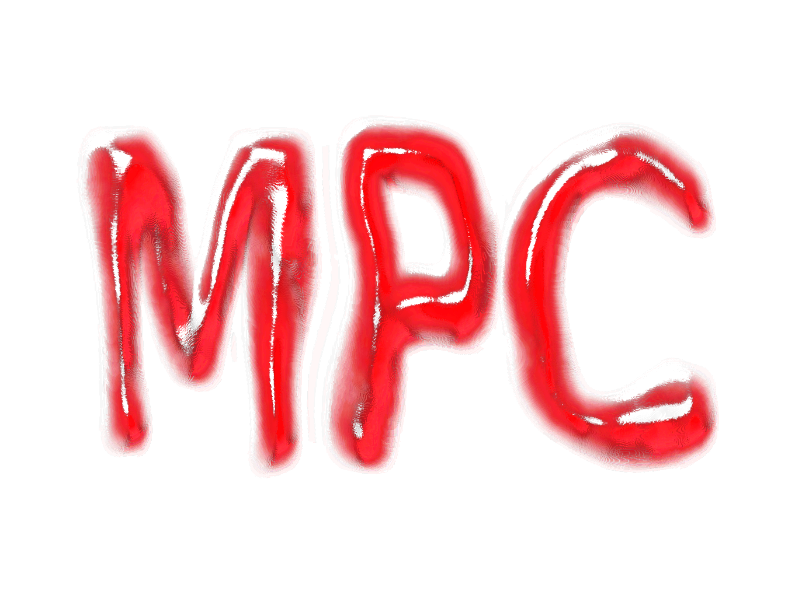

MPC Logo + Video
A logo and weekly announcement video designed for the Music Production Club at the University of California, Santa Barbara. The logo features an acronym of the club's name in bold, gooey, and glossy red typography made on Inkscape. The video includes text and animations created on an open source website. The designs incorporate a vibrant color palette and dynamic shapes to convey a sense of energy, reflecting the club's focus on creativity and collaboration. Both works were intended to be suitable for commercial advertisement.